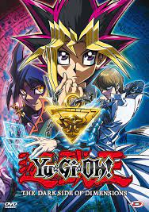

intro
Benvenuto su Yu-Gi-Basics, qui potrai trovare tutto quello di cui hai bisogno per iniziare a giocare a yu gi oh! che cos'è yu gi oh? Yu gi oh è un gioco di carte collezionabili prodotto dalla konami nel 1999 in Giappone. Il gioco è tratto dalla omonimo manga che racconta le vicende di Yugi seguendo i suoi appassionanti duelli. Yu-Gi-Basics nasce appositamente per fornire una guida per chi si vuole approcciare a questo nuovo mondo tutto da scoprire! Nel sito ti mettiamo a disposizione tutto quello che ti serve per inziare a giocare in un unico sito nel modo più semplice possibile: dalle regole base del gioco fino al forum per condividere tutti i segreti (e le tue vittorie) del gioco fino a diventare il duellante del millenio! Per supportarti nella tua scalata al successo, ma anche per divertirti con gli amici, potrai usufruire del nostro strumento di supporto al gioco(possibilmente dopo aver imparato le regole) che non ti farà mai mancare niente (lp, segnalini, dadi, monete ecc...). Nel forum potrai convidere la gioia delle tue vittorie, i tuoi mazzi migliori (ricordando che un campione non scopre mai tutte le sue carte) e le tue opinioni sul gioco. Infine potrai trovare trovare tutte le news sui principali eventi e tornei OTS, cioè quei tornei ufficiali organizzati dai negozi in tutta italia e che ti permetteranno di ricevere grossi premi, comprese bustine uniche non aquistabili nei negozi!!
potrai trovare molto utile per giocare anche il sito Duelingbook per giocare contro molti altri giocatori e crrare mazzi online e al sito Yu-Gi-Oh-card per comprare le tue carte.
manga

Il manga di Yu-Gi-Oh! è l'inizio di tutto, dove è stato creato per la prima volta il mondo da dove è tratto il nostro bellisimo gioco. La trama del manga ha come protagonista Yugi Mutō , ragazzo senza amici, con l'esclusione della amica di infanzia Anzu, e perseguitato dai bulli Jonouchi e Honda, fino a quando non riceve dal nonno un misterioso rompicapo chiamato Puzzle del Millennio, che una volta risolto gli crea una seconda personalità: l'antico faraone Yami Yugi/Atem. Atem al contrario di Yugi ha una personalità forte e carismatica e sopratutto abilissima nei giochi di ruolo. Sarà proprio grazie alla collaborazione tra Atom e Yugi e al gioco di carte "Magic and Wizards" che il protagonista rafforzerà il suo carattere, si farà una fama come abile giocatore portandolo a fare tante nuove avventure per scoprire i segreti dietro il Puzzle del Millenio e agli altri sei Oggetti del Millenio.
anime e film
L'anime di Yu-Gi-oh! è forse l'elemento più conosciuto del franchise insieme al gioco stesso. L'anime al momento è composto da 7 serie per un totale di più di 1000 episodi a cui si vanno ad aggiungere 4 film. La storia delle prime stagioni è solo inspirata al manga originale e da maggior focus al gioco di carte rispetto alle dinamiche tra personaggi. Nelle stagioni più recenti (a partire da Yu-Gi-Oh! GX) invece è il manga che è un adattamento dell'anime che quinti ha un ruolo predominante nel canon del franchise. Le varie serie mostrano diversi personaggi e diverse storie, piu o meno collegate tra loro incentrate sui combattimenti del gioco di carte. Anche nei film vengono trattate storie inedite che prendono spunto da eventi o personaggi presenti nelle serie. Puoi seguire le prime due stagioni dell'anime su Netfilxvideogiochi
 Il franhise ha dato vita nel corso del tempo a tantissimi videogiochi tratti dall'anime per tutte le piattaforme. I primi giochi usciti sono: Yu-Gi-Oh! Duel Monsters per Gameboy e Yu-Gi-Oh! Monster Capsule: Breed & Battle per PlayStation nel 1998 per arrivare al fino al famoso Yu-Gi-Oh! Duel Links del 2016 disponibile sia per iOS che per Android
Il franhise ha dato vita nel corso del tempo a tantissimi videogiochi tratti dall'anime per tutte le piattaforme. I primi giochi usciti sono: Yu-Gi-Oh! Duel Monsters per Gameboy e Yu-Gi-Oh! Monster Capsule: Breed & Battle per PlayStation nel 1998 per arrivare al fino al famoso Yu-Gi-Oh! Duel Links del 2016 disponibile sia per iOS che per Android